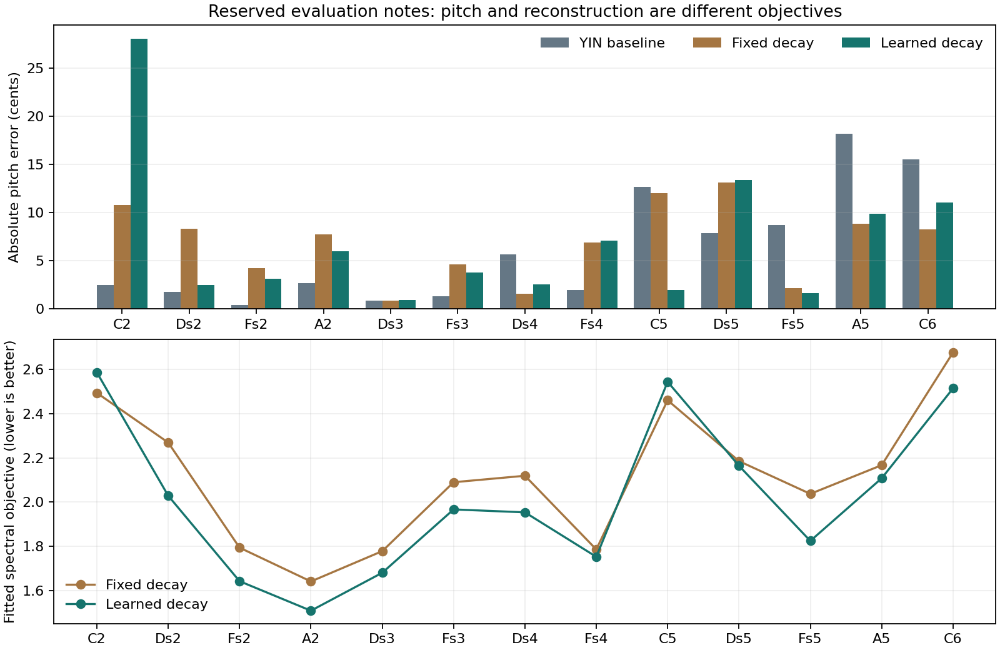

CaCTüS Project 15 · CPU research prototype
Piano Notes
Can a better reconstruction recover a better note?
Measured resultLearned decay lowered the fitted spectral objective on 11 of 13 evaluation notes. The mean per-note relative reduction was 4.71%. YIN had the lowest median and mean absolute pitch error. All methods were within 50 cents on every evaluation note. These results support improved reconstruction overall, not improved transcription over YIN.
Real piano audio → YIN pitch estimate → differentiable synthesis → spectral fitting → pitch and reconstruction evaluation.
Evaluation on 13 reserved notes
The entire evaluation took 66.1 seconds using two CPU threads. No GPU was used.

The failure that changed the method
Initial development allowed candidates at half, equal and double the YIN estimate. It selected an octave-too-low fundamental on 3 of 4 development notes: higher partials could explain the recording. The initial results and sources are preserved. Final refinement was bounded to ±0.75 semitones around YIN, then frozen before evaluation. This audio-derived prior prevents broad octave search; the final zero-octave-error count is not evidence of unrestricted octave disambiguation.
Original development results · Frozen protocol hashes
Change controls without refitting
Development note C4. A pitch change and a faster decay are decoder interventions, not evidence of learned causal factors.
Listen to every evaluation note
Playback uses one common gain across each original/fixed/learned group to avoid clipping. Crops were peak-normalised before fitting. MIDI uses a fixed one-second duration; it is not onset/offset transcription.
C2
One-note MIDI · Fitted controls and loss history
Ds2
One-note MIDI · Fitted controls and loss history
Fs2
One-note MIDI · Fitted controls and loss history
A2
One-note MIDI · Fitted controls and loss history
Ds3
One-note MIDI · Fitted controls and loss history
Fs3
One-note MIDI · Fitted controls and loss history
Ds4
One-note MIDI · Fitted controls and loss history
Fs4
One-note MIDI · Fitted controls and loss history
C5
One-note MIDI · Fitted controls and loss history
Ds5
One-note MIDI · Fitted controls and loss history
Fs5
One-note MIDI · Fitted controls and loss history
A5
One-note MIDI · Fitted controls and loss history
C6
One-note MIDI · Fitted controls and loss history
Scope and limitations
13 evaluation notes from one piano/sample set; one second per note at 8 kHz; no independent instrument or velocity-layer evaluation. Each evaluation waveform is fitted at inference. The same spectral objective is optimised and reported. Learned envelopes add parameters. No onset/offset detection, chords, sustain-pedal inference, learned encoder, variational inference or causal representation learning is implemented. Filename pitches are nominal labels; deviations of a few cents can include instrument tuning. No listening-quality claim or population-level significance test is made.
Reconstruction regressions: C2: fixed 2.494, learned 2.586; C5: fixed 2.461, learned 2.544.
Full text report · All metrics · Environment and provenance · Reproduction instructions